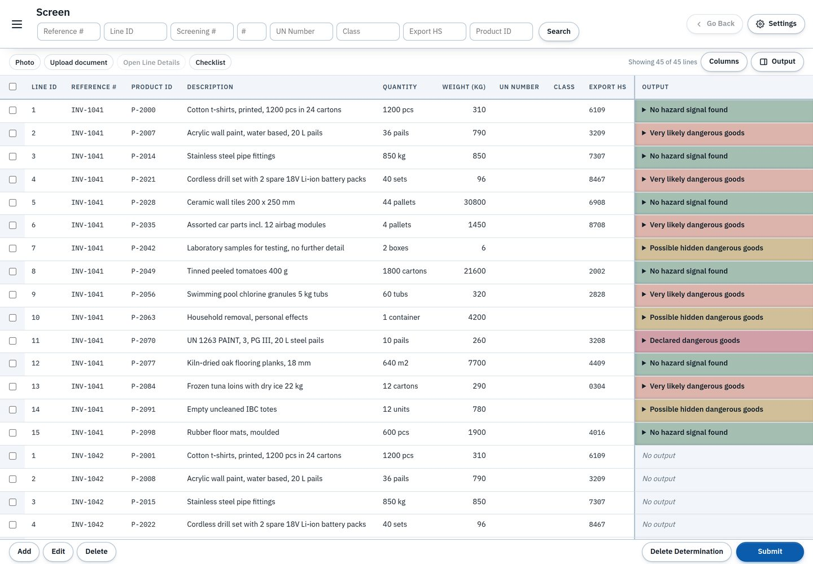
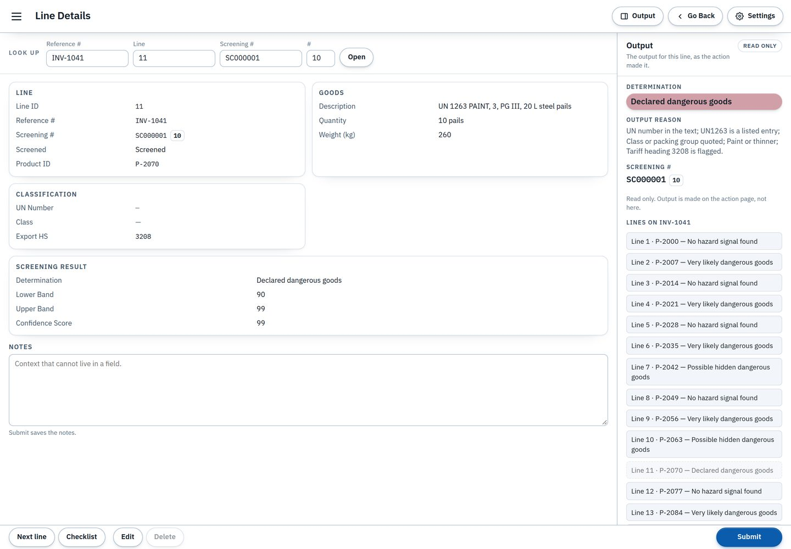
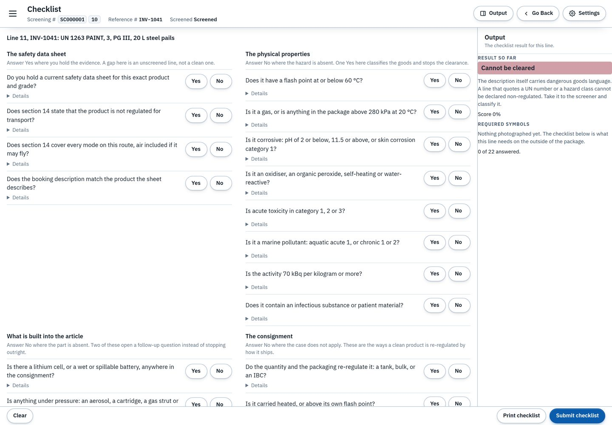
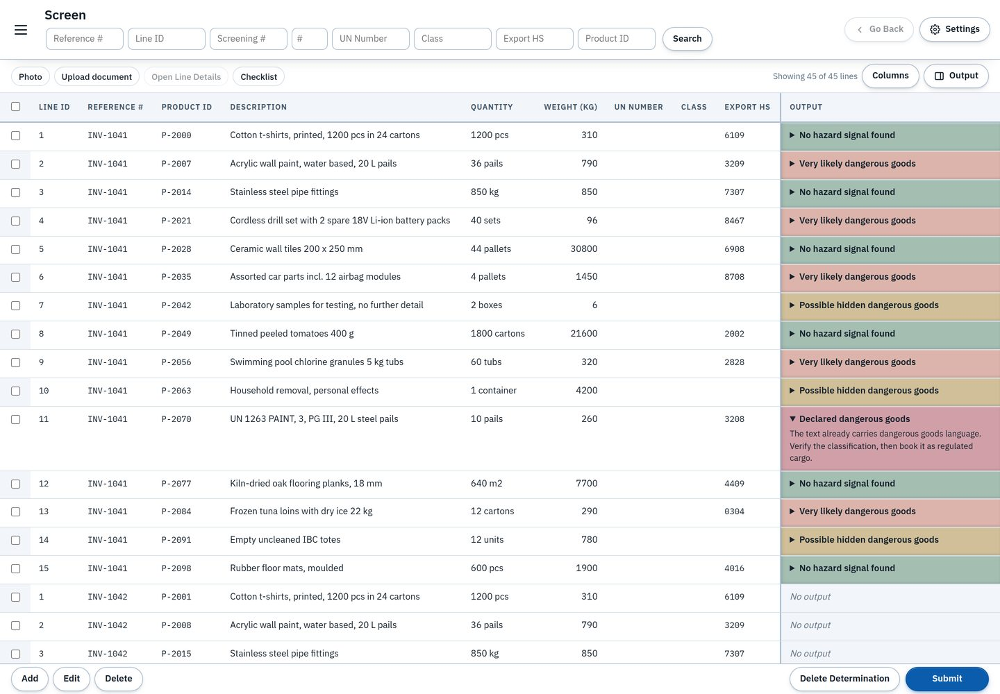

E. William Harris IV
Freight forwarding and supply chain by trade. I build AI tools for the two spots I know firsthand: the receiving dock and the dangerous-goods screening desk.
Start with Ship Safe Resume (PDF) LinkedIn E.William.Harris96@gmail.com
In this notebook
| Section | What it is |
|---|---|
| About | Where I come from, and where the projects come from. You are here. |
| Ship Safe | A dangerous-goods pre-screening desk for freight forwarders. |
| Witness | Receiving-dock cross-check: the receiver’s spoken read against the camera’s look. |
| TMS Consolidation Agent | Freight consolidation run as propose-and-ask, with the struggle left visible. |
| What I Do | The work, in one page. |
| Experience, in Brief | The trade years, briefly. |
| Resume | The formal document, as a PDF. |
| Get in Touch | Email and LinkedIn. |
About
I come out of freight forwarding: I worked at Expeditors on the air export team, in an office attached to the warehouse — close enough to the freight to watch the manual processes grind, day after day. That is where my projects come from. I design and build AI tools for the two spots I know firsthand, the receiving dock and the dangerous-goods screening desk, and everything on this page is designed and directed by me and built with AI assistance, stated openly.



